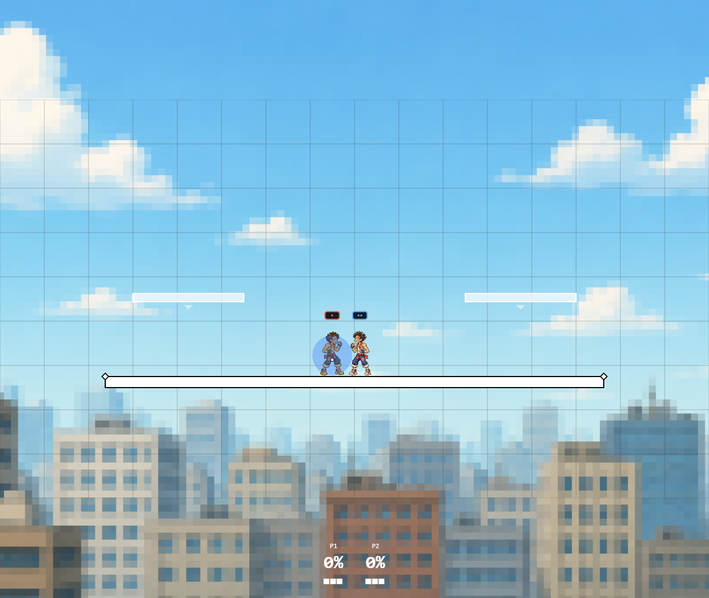

Parry, controls and damage update
4 November 2026 · Gameplay audit pass 2 / batch 30
Release parry, independent aim and jump, directional short-hop attacks, fractional damage and one-on-one damage scaling are connected. Full Ultimate parity and human balance are still open.
Play the local production build · Evidence and detailed limits · Previous audit
Release-based parry
Shield raise and hold use ordinary blocking. Release after at least three held simulation frames opens a five-tick parry window (ages 0–4). A successful parry prevents percent damage, shield damage and shield stun, and consumes the window. Reholding cancels the release attempt; a new shield entry resets it. Shield-stun input buffering remains limited.
Limit: Attacker gets 11 additional hitlag ticks, an explicit custom advantage. Complete Ultimate parry hitstop, projectile exceptions, shield-drop timing and repeated-hit interactions are not certified.
packages/engine/src/fsm/states/ShieldState.ts
apps/server/src/GameEngine.ts
apps/server/src/GameEngine.release-input-damage.test.tsIndependent aim and jump
UP is a new 0x0800 bit in the uint16 input mask; validators accept 0x0000–0x0fff. Up selects tilts, smashes, aerials, specials, up throws, dodge direction and vertical DI/SDI. It does not trigger a jump. Jump buttons do not add upward aim. Known old default Up keys migrate, while unrelated custom action keys remain intact.
Limit: No tap-jump toggle or sustained analog walking was added. Existing bit-based walk/run and movement prediction remain approximate.
packages/shared/src/types/InputEvent.ts
apps/server/src/MatchSession.ts
apps/client/src/input/keymaps.ts
apps/client/src/input/GamepadInputSource.ts
apps/client/src/input/__tests__/directionJump.test.tsDirectional short-hop attacks
Simultaneous jump+attack captures the attack direction at entry to jump squat and launches the corresponding neutral, forward, back, up or down aerial. Ordinary short-hop aerials deal 85% damage; aerial specials do not inherit that reduction. Double jump, landing and incoming hits clear short-hop context.
Limit: This does not implement a full Ultimate action buffer or every shortcut/controller option.
apps/server/src/GameEngine.ts
packages/engine/src/hitbox/index.ts
packages/engine/src/hitbox/damageModifiers.test.ts
apps/server/src/GameEngine.release-input-damage.test.tsDamage precision and match-size scaling
Damage retains fractions instead of flooring each contact. A match that starts with two participants applies 1.2× percent damage; three/four-participant matches retain group scaling even after eliminations. Shield damage and base knockback are not multiplied by the one-on-one factor. Throws, pummels, counters and ordinary/floor hits follow the match-size damage rule; hit events carry scaled damage, with zero for a confirmed parry.
Limit: Existing stale-move, rage, knockback, crouch-cancel and counter-rounding formulas remain project approximations. This pass does not certify their numeric Ultimate parity.
apps/server/src/GameEngine.ts
packages/shared/src/constants/physics.ts
packages/engine/src/hitbox/index.ts
apps/server/src/GameEngine.release-input-damage.test.tsCurrent controls
Up now aims. Use a separate jump button. Other attack, shield, grab and taunt bindings remain available in Controls; old default aim keys are migrated.
| Seat/device | Aim up | Jump |
|---|
| P1 keyboard | Arrow Up / W | X / Space |
| P2 keyboard | I | M |
| P3 keyboard | Numpad 8 | Numpad Enter |
| P4 keyboard | T | N |
| Standard gamepad | Stick Up / DPad Up | A |
Damage examples
For a base 8-damage aerial with the existing 1.05 freshness bonus:
| Match | Full hop | Short hop |
|---|
| Three/four participants | 8.4% | 7.14% |
| Two participants | 10.08% | 8.568% |
Fractions survive simulation and replication. The one-on-one factor does not multiply shield damage or base knockback. The HUD may round for display.
Validation
The full pnpm test regression gate passed: 71 shared, 31 gamepad-input, 322 engine, 256 server and 562 client tests (1,242 total, 17 skipped). An additional double-jump/landing context regression also passed in the latest 13-test parry/input/damage suite. Workspace type checks passed.
All 47 review/local browser cases and the separate four-client test passed (48 total). Multiplayer independently aimed Up, atlas bodies, markers, movement, pause, refresh/rejoin and taunts passed. The staged production build loaded fourteen live pages without failed requests or page errors.
Validation details · Four-client evidence
Seeded stability playtests
96 hard-CPU matches: six pairings including mirrors, eight paired seeds with side swaps, three stocks, a 3,600-tick cap. 73 finished; 23 timed out. Timeouts have no winner. All tracked positions, velocities and damage stayed finite; eight directional-dodge probes captured correctly. This is stability evidence, not a balance verdict. Changed damage rules and bot recovery input mean the result is not a controlled balance comparison with the previous pass.
All matches and probes · Current-source harness
Release parry in the actual game

Prioritized remaining work
| Priority | Area | Next evidence needed |
|---|
| P1 | Human and physical-controller sessions | Parry timing, missed inputs, recovery and short-hop contacts across all fighters; multiple players, swapped sides and replay evidence. None performed by this automated pass. |
| P1 | Stale moves, rage and knockback formulas | Replace or verify project values against a versioned dataset; audit pre/post-hit percent, DI/SDI, hitstun, shield damage and counter rounding. |
| P1 | Complete defensive timing | Verify parry hitstop and projectile behavior, shield drop/stun buffering, dodge fatigue, tech windows and ledge regrabs. |
| P1 | Input and movement model | Add sustained analog walking, explicit action buffers, configurable tap jump and predictor alignment; independent Up does not finish these. |
| P1 | Mixed legacy rules | Resolve L-cancel, meteor-cancel, custom wavedash and crouch-cancel rules against the chosen Ultimate profile. |
| P1 | Roster and stage target | Define original-fighter move specifications and reference stages; the three original fighters do not map one-to-one to Nintendo fighters. |
| P2 | Remote networks and device performance | Real latency/loss, physical pads, mobile GPU memory, cold downloads, frame pacing and exhaustive action/clip reachability remain open. |
Primary references and scope
Nintendo 3.0.0 fighter adjustments — Release-triggered perfect shield and the repeated-activation issue.
Prima author guide: Perfect Shield — Five-frame release window and at least three raised-shield frames. Source supports these entry values, not the custom +11 attacker hitstop.
Prima author guide: Short Hop Attack — 85% short-hop attack damage.
Rubendal calculator author source: global.js — The author documents 20% one-on-one damage and 0.85 short-hop damage, separated from base knockback damage. It is a research implementation, not an official Nintendo numeric dataset.
Rubendal calculator author source: formulas.js — Short-hop multiplier parameter.
Repo evidence paths are relative to C:/Github/smash-bros-clone. Original character drawings and atlas coverage are unchanged: 135 enabled clips per fighter, one retained legacy overview, fourteen live atlas pages. Environment files and bonney are excluded.